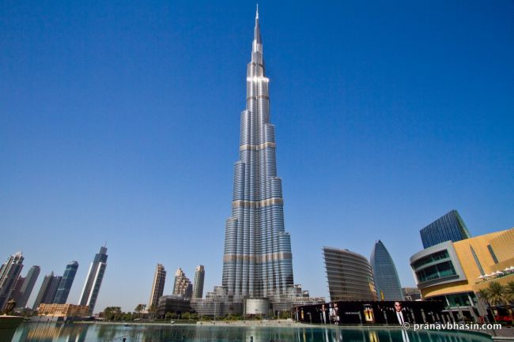
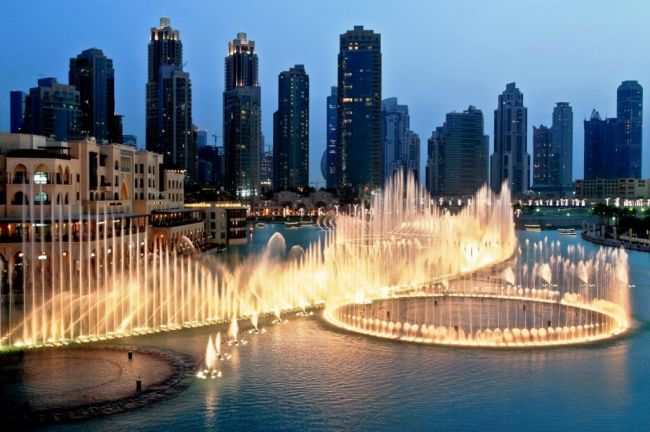
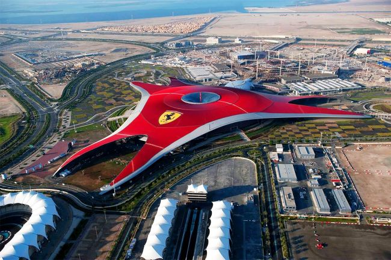
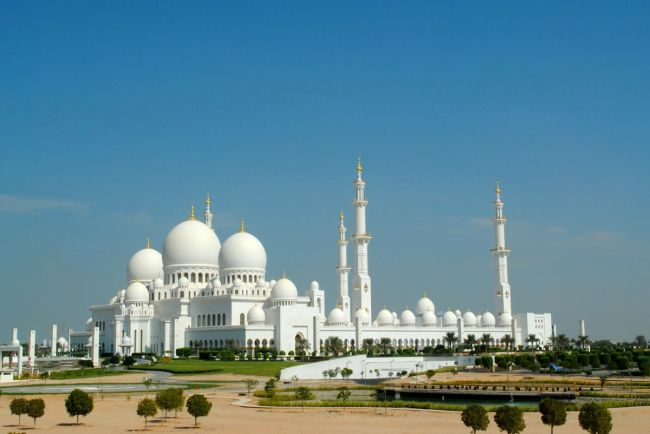
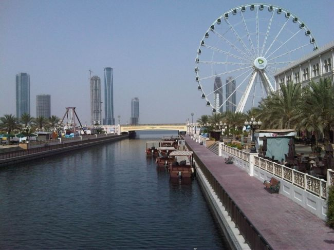

Коротко про ОАЕ
ОАЕ - це невелика, але дивовижна країна. Всього за кілька десятиліть з безкрайньої пустелі з рибальськими селами вона перетворилася в одну з найбагатших і розвинених країн світу. Основною складовою її економіки є експорт і торгівля нафтою і газом. Але і туризм займає в ній не малу нішу. Наприклад, в 2019 році країну відвідало більше шістнадцяти мільйонів туристів.
Знаходяться ОАЕ в північно-східній частині Аравійського півострова і омиваються Перською затокою. Складаються з 7 еміратів, в кожному з яких діють свої закони і правила. Самий великий з них - Абу-Дабі. Він же є і столицею держави.
Якщо говорити про клімат, то він тут дуже жаркий і сухий. Навіть взимку середня температура повітря в ОАЕ не опускається нижче позначки +26 градусів за Цельсієм. Тому туристичний сезон в цій країні відкрито цілий рік.
За що туристи вибирають ОАЕ, так це за розкішні і комфортабельні готелі, чисті пляжі, різноманітність розваг і найвищого рівня сервіс.
^ Наверх ^Курорти ОАЕ
Абу Дабі
Як ми вже писали, це і столиця держави, і найбільший емірат. Він займає близько 85% площі всієї країни. Підходить для спокійного сімейного відпочинку. Якщо ж говорити про готелі, то тут є як і шикарні «п'ятірки», так і цілком доступні «трійки».
Влітку в Абу-Дабі дуже жарко і перебувати на вулиці вдень практично нестерпно.
Дубаї
Другий за величиною і найвідоміший емірат ОАЕ. Є центром розкішного життя, неймовірного багатства, передових технологій, сучасної архітектури і звичайно ж якісного відпочинку в кращих готелях світу. Чули про найвищу споруду в світі Бурдж Халіфа і про готель у вигляді вітрила? Так ось, вони знаходяться саме в Дубаї.
Фуджейра
Цей курорт знаходиться далеко від основних мегаполісів і більшості визначних пам'яток ОАЕ. Тут немає хмарочосів, але зате є безліч красивих ландшафтів і історичних будівель. Відпочинок тут націлений на проведення всього часу на території готелю. До того ж, в силу того що клімат на Фуджейрі більш вологий, ніж на інших курортах, тут значно більше зелені.
Найпопулярніші пам'ятки ОАЕ
Бурдж-Халіфа (Дубай)
Одна з найвідоміших визначних пам'яток ОАЕ. Що, власне, не дивно. Адже мова йде про найвищу будівлю в світі. Її висота понад 820 метрів. Але вражає ця споруда не тільки своєю висотою, а й сучасною архітектурою.
Тут на оглядовому майданчику, що знаходиться на 128 поверсі (на висоті 472 метрів) відкриваються просто неймовірні види на місто.
Співаючі фонтани (Дубаї)
Щоб побачити другу відому пам'ятку ОАЕ не потрібно навіть далеко відходити від Бурдж-Халіфа. Вона знаходиться неподалік - це один з найбільших і високих фонтанів світу. Його струмінь може досягати висоти в сто п'ятдесят метрів. До того ж це не просто фонтан, а музичний фонтан. Протягом усього дня він виконує близько 20 композицій без повторень.
Крім співаючих фонтанів і хмарочоса Бурдж-Халіфа в Дубаї варто відвідати:
- штучний гірськолижний комплекс Ski Dubai;
- штучний архіпелаг з трьох островів Острови Пальм;
- золотий ринок;
- ТРЦ «Дубаї Молл»;
- аквапарк «Wild Wadi».
Тематичний парк Ferrari World (Абу-Дабі)
Один з найбільших тематичних парків світу. Його площа порівнянна з площею шести футбольних полів. Унікальність цього парку полягає в його формі і оформленні: фасад розфарбований в червоний колір і повторює форми легендарної моделі Ferrari GT, а на даху розміщується логотип марки. Всередині можна покататися на різних атракціонах і побачити всі досягнення фірми Ferrari.
Мечеть шейха Зайда (Абу-Дабі)
Це велична споруда з білого мармуру площею близько 12 гектарів не залишить байдужим нікого. У будівництві цього шедевра сучасної арабської архітектури брали участь фахівці з таких країн як США, Італія та Німеччина. А зведено воно на честь першого правителя країни шейха Зайда ібн Султан ель Нахайану.
Канал Аль-Касба (Шарджа)
Якщо опинитеся в Шарджі, не пропустіть можливість прогулятися вздовж каналу Аль-Касба. Тут велика кількість розваг, ресторанів, кафе, дитячих і спортивних майданчиків та інших захоплюючих місць. Родзинкою набережної цього каналу є 60-метрове колесо огляду, з якого відкриваються захоплюючі види на місто.
Де купити тур в ОАЕ
Підібрати звичайний або гарячий тур в ОАЕ з Києва або з іншого міста України можна тут. Придбати же тур в ОАЕ можна в одному з туристичних агентств, що працюють в нашій країні. Знайти найближче в своєму місті можна, перейшовши за наступним посиланням.
Чи потрібна віза в ОАЕ
З 1 січня 2018 громадянам України з біометричними паспортами, які планують туристичні поїздки в ОАЕ, не потрібно оформлення віз заздалегідь. Вони оформляються на місці по прибуттю в один з аеропортів країни. Причому безкоштовно.
^ Наверх ^